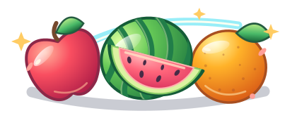

挥挥小手，切出满满果汁！
5 首成品音乐 · 两套十果独立音色 · 独立音量。
游戏已暂停，摄像头仍开启；离开页面会关闭。
音乐按节奏截取，首尾混合、响度统一并压缩；音效由授权素材剪辑和混合。当前曲目原作 · 许可 · 所有作品及署名
首次加载动作识别模型，请稍等一下。
站在屏幕前，头、肩膀和双手都入镜。
自然挥手或小步移动，留出安全空间。
用手掌依次靠近九个小圈，看看真实游戏光点是否贴着手。
小手准备！
水果在等你回来！
3 分钟最高纪录 0 · 每一次挥手都是成长
请检查摄像头权限后重试。